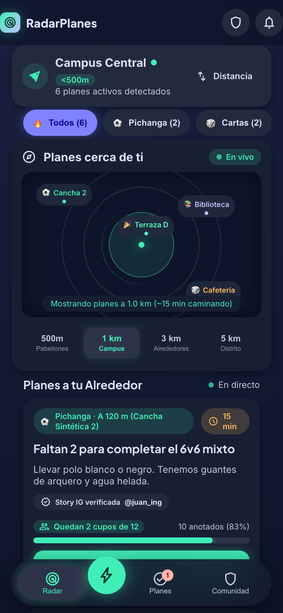
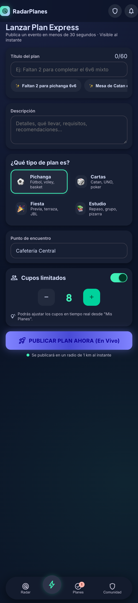
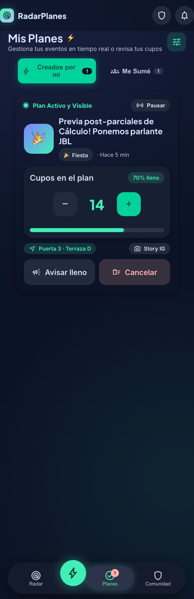
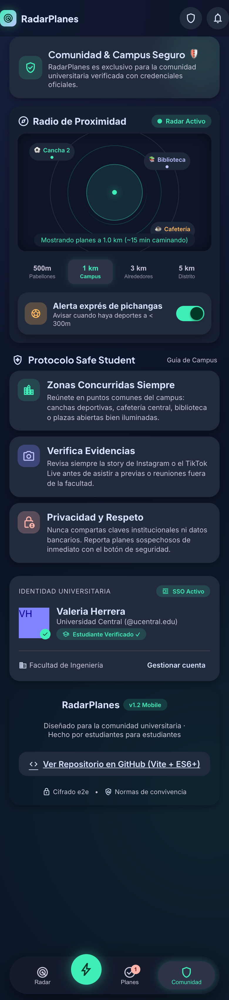
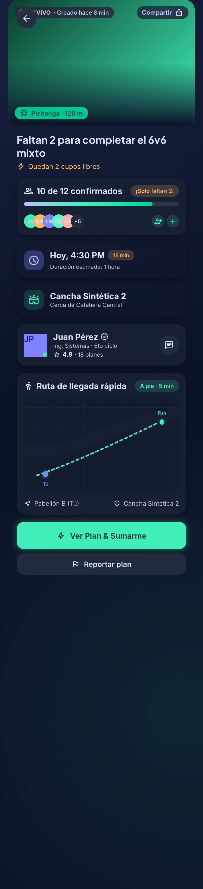
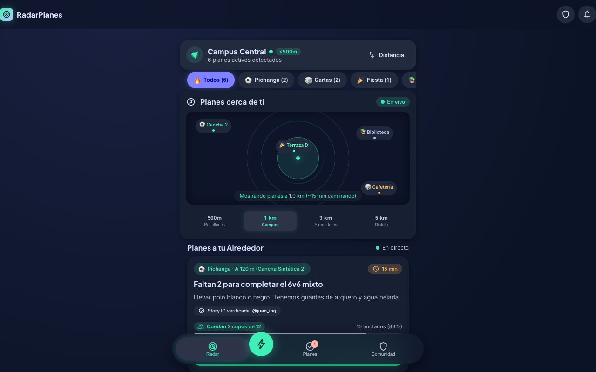

RadarPlanes
Hyperlocal Campus Express
Aplicación web mobile-first para descubrir, crear y unirse a planes universitarios en vivo
Universidad [Confidencial] · Laboratorio 03 · Programación Web / Móvil
1. Integrantes
| Apellidos y Nombres | Valentina Chamorro [a completar por el estudiante] |
| Código | [a completar] |
| Ciclo | 2026-2 |
| Curso | Programación Web / Móvil · Laboratorio 03 |
| Docente | [a completar] |
| Fecha de entrega | 22 de setiembre de 2026 |
2. Objetivo de la aplicación
Desarrollar una aplicación web local, responsive y mobile-first, que sirva como
una red social universitaria hiperlocal: una "vista de radar" del campus donde los
estudiantes pueden descubrir, crear y unirse a planes en vivo (pichangas, mesas de cartas,
previas, grupos de estudio) que ocurren en los próximos minutos dentro de un radio de
500 m a 5 km alrededor del campus.
El objetivo técnico es aplicar de forma práctica conceptos de desarrollo web móvil
y multiplataforma: layout adaptativo (mobile-first CSS), interacciones táctiles, SPA
con hash-routing, persistencia local en el navegador y bundling moderno con Vite — todo
sin frameworks de UI pesados.
5vistas SPA
0frameworks de UI
≈17 kBJS gzip total
100%responsive
3. Tecnologías utilizadas
HTML5
Semántica moderna (<main>, <nav>, <section>, <article>) con meta viewport y safe-area-inset para notched devices.
CSS3
Variables (design system), flex/grid, container queries, dvh, animaciones @keyframes, scroll-snap, backdrop-filter, gradient mesh.
JavaScript ES2020+
Módulos nativos, DOM nativo (createElement), async/await, Map/Set, optional chaining, localStorage/sessionStorage, sin bundlers runtime.
Vite 5
Bundler y dev-server con HMR. Build de producción con code-splitting automático y tree-shaking. Deploy estático (≈17 kB gzip).
Git + GitHub
Control de versiones con commits semánticos. Repositorio público en github.com/ValentinaCham/radarplanes-campus. GitHub Actions para Pages.
Material Symbols · Inter
Iconografía vectorial y tipografía variable cargadas vía Google Fonts CDN.
4. Descripción breve de la solución
4.1. Arquitectura general
La aplicación es una SPA (Single-Page Application) construida íntegramente en
JavaScript vanilla. Al cargar, main.js monta el shell (top header + bottom
nav) y pinta la vista actual. Un mini router basado en location.hash
permite navegar entre las 5 vistas sin recargar la página, manteniendo la URL
compartible y el botón "atrás" del navegador funcional.
4.2. Las cinco vistas
- Radar en vivo (
/#radar) — mapa del campus con pines animados, selector de radio (500 m, 1 km, 3 km, 5 km), filtros por categoría (pichanga, cartas, fiesta, estudio) y un feed de tarjetas ordenable por distancia o urgencia.
- Lanzar Plan Express (
/#lanzar) — formulario con contador de caracteres en vivo (0/60), sugerencias automáticas, selector visual de categoría con iconos emoji, stepper de cupos (2-20) y switch de visibilidad.
- Mis Planes (
/#mis-planes) — pestañas Creados / Me Sumé con gestión en tiempo real: aumentar/disminuir cupos, pausar plan, modal de confirmación de cancelación.
- Ficha · Cómo llegar (
/?plan=plan-1#radar) — vista de detalle con hero gradient, organizador verificado con rating, ruta GPS animada en SVG y CTA RSVP que modifica cupos.
- Comunidad & Campus Seguro (
/#comunidad) — radio de proximidad, alerta exprés de pichangas (toggle), Protocolo Safe Student, perfil universitario SSO y créditos.
4.3. Estado y persistencia
Toda la información dinámica vive en una clase PlanStore (src/views/radar.js)
que serializa automáticamente a localStorage: planes creados, cupos, radio,
ordenamiento, categoría activa y estado del toggle de alertas. El saludo inicial se
gestiona con sessionStorage para evitar repetirlo en la misma sesión.
4.4. Diseño mobile-first
La maqueta base está pensada para 390 × 844 px (iPhone 12). En pantallas ≥ 900 px
se aplica un patrón phone-frame: el contenido se centra en un marco de 540 px con
un fondo radial-gradient, simulando un dispositivo móvil sobre un escritorio. La
bottom-nav permanece fija en mobile y se oculta al entrar a una ficha para maximizar
el área de lectura.
4.5. Diseño visual
Se adoptó un dark-mode Material 3 con paleta personalizada: primary lila
(#8083ff), secondary verde menta (#40efb7), tertiary ámbar
(#ffb95f) sobre fondo #0b1326. La jerarquía se construye con
radios consistentes (10/14/18/24 px), sombras suaves con tinte del color principal y
microinteracciones (pulse, ping, spin en radar y badges "EN VIVO").
5. Capturas de pantalla
5.1. Vistas mobile (390 × 844 / 1700)
Vista 1 · Radar en vivo — Mapa del campus con pines, selector de radio y feed de tarjetas ordenable.

Vista 3 · Lanzar Plan Express — Formulario completo con sugerencias, selector de categoría, stepper de cupos.

Vista 4 · Mis Planes — Gestión en tiempo real con tabs Creados / Me Sumé y stepper de cupos.

Vista 5 · Comunidad & Campus Seguro — Radio de proximidad, alertas, perfil universitario.

Vista 2 · Ficha / Cómo llegar — Detalle del plan con organizador verificado y ruta GPS en SVG.

5.2. Vista desktop (1280 × 800)

Patrón phone-frame centrado · 540 px de ancho.
6. Conclusiones
- Mobile-first funciona. Construir la interfaz pensando en una pantalla de 390 × 844 px obligó a priorizar el contenido esencial y aplicar overflow-x: hidden, min-width: 0 y flex-wrap correctamente, evitando luego costosos refactors.
- Vite + vanilla JS es una combinación potente y ligera. El bundle final de producción pesa 17 kB JS + 18 kB CSS (gzip), comparable o inferior al de muchos sitios que usan frameworks pesados. Sin React, sin Vue: solo DOM nativo, módulos ES y HMR.
- El diseño responsive se logra con CSS moderno. El patrón phone-frame (centrar el contenido en un marco de 540 px sobre un escritorio) ofrece una experiencia mobile-first incluso en desktop, sin escribir media queries adicionales — basta con max-width y margin: auto.
- La persistencia con localStorage da una experiencia realista. Los planes creados, los cupos y los ajustes del usuario sobreviven a recargas, demostrando el ciclo de vida completo de un mini-CRUD sin necesidad de backend.
- El router por hash es simple y suficiente. Para una SPA pequeña con pocas vistas, no se necesita React Router ni Vue Router:
window.location.hash + un listener de hashchange cubren el 100% del caso.
- Material Symbols + Google Fonts carga rápido. Con <link rel="preconnect"> el FCP mejora notablemente y la iconografía es coherente sin requerir assets SVG por ícono.
- El testing visual con Puppeteer es indispensable. Las capturas con device emulation (DPR 2, isMobile: true) permitieron detectar overflows y problemas de wrapping que solo aparecen a escala real en un dispositivo.
El proyecto cumple con los cinco requisitos del laboratorio:
- ✅ 5 vistas/secciones — Radar, Lanzar, Mis Planes, Ficha, Comunidad.
- ✅ JS dinámico — generación de tarjetas, conteo de cupos, filtros, ordenamiento, modal, toast, persistencia.
- ✅ Resultados en tarjetas/listas — feed de planes, lista de planes propios, lista de tips de seguridad.
- ✅ Responsive — mobile-first + phone-frame en desktop, verificado en iPhone 12 (390 × 844) y 1280 × 800.
- ✅ Repositorio en GitHub — github.com/ValentinaCham/radarplanes-campus con README, instrucciones de ejecución y deploy automático vía GitHub Actions a GitHub Pages.
7. Referencias
- MDN Web Docs. Mobile-first Responsive Design. https://developer.mozilla.org/.../Mobile_first
- Vite.js. Getting Started — Features & Guides. https://vitejs.dev/guide/
- Google Material Design. Material Design 3 — Color System & Tokens. https://m3.material.io/.../tokens
- Google Fonts. Material Symbols & Icons. https://fonts.google.com/icons
- W3C. CSS Custom Properties for Cascading Variables — Level 1. https://www.w3.org/TR/css-variables-1/
- W3C. CSS Flexible Box Layout Module — Level 1. https://www.w3.org/TR/css-flexbox-1/
- Puppeteer. Device emulation for screenshots. https://pptr.dev/guides/device-emulation
- GitHub Docs. GitHub Actions — Deploying a static site to GitHub Pages. https://docs.github.com/en/pages
- javascript.info. LocalStorage, sessionStorage. https://javascript.info/localstorage
- CSS-Tricks. A Complete Guide to CSS Grid. https://css-tricks.com/.../complete-guide-grid/